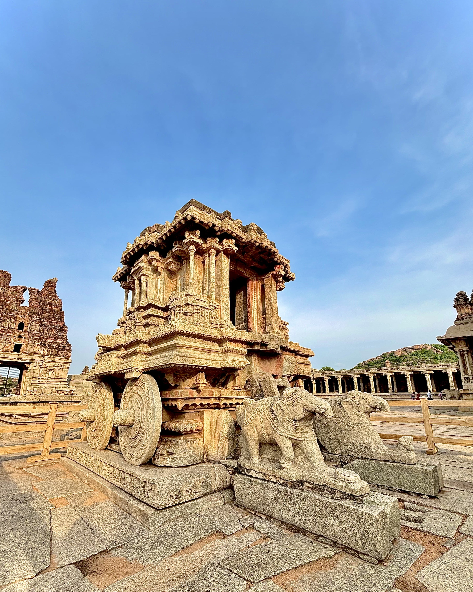

Last summer, I took a big trip to India right when it was hot. One place I knew I had to check out was Hampi, and honestly, it was incredible. Hampi is this ancient city, mostly ruins now, full of huge stones, old temples, and that famous stone chariot. It looks amazing, like something out of a history book, but it's totally real history right there.

The ancient stone chariot of Hampi under the summer sun
Now, for the honest advice: visiting Hampi in the summer (like April to June) means it gets extremely hot. Walking on those sunny stone paths in the middle of the day is brutal it genuinely feels like an oven! The smart way to handle it is to go early. Start your sightseeing right when the sun comes up, around 6:00 AM, and stop moving by 10:30 AM. And you absolutely must drink something every 30 minutes. Seriously, set an alarm on your phone! Water, coconut water, fresh juice whatever works, just keep sipping to avoid getting sick from the heat. You can take a long break indoors and then go out again after 4:30 PM to catch the sunset.
To make the whole trip comfortable, you should balance Hampi with some cool places. Since Hampi is so hot, I highly recommend visiting some Hill Stations. If you go up North, places like Ladakh are stunning in the summer. It's a high-altitude desert, very cold and beautiful, perfect for escaping the heat. Or, if you prefer green areas, head South to places like Coorg or Wayanad. It's cool, misty, and full of beautiful spice and coffee farms.
Basically, traveling to India in the summer means you have to be clever about your timing. Take it easy, don't try to rush everything, and always keep hydrating. If you follow these simple steps, you will have a fantastic time seeing all the amazing history and nature India has.